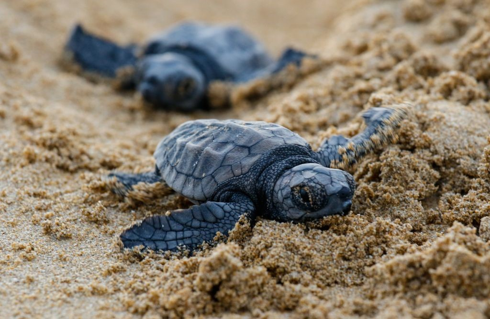
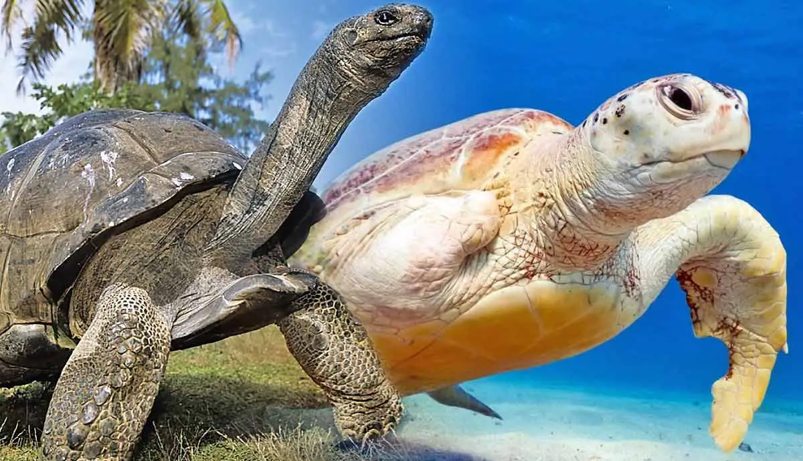
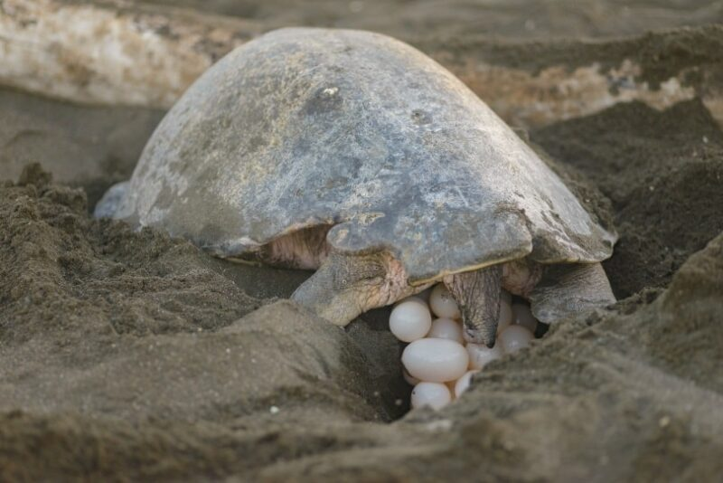

1. Turtles belong to one of the oldest reptile groups in the world – beating snakes, crocodiles and alligators!
2. These creatures date back to the time of the dinosaurs, over 200 million years ago – woah!
3. Turtles are easily recognised by their bony, cartilaginous shell. This super-tough casing acts like a shield to protect them from predators – some turtles can even tuck their head up inside their shell for extra protection!
4. Just like your bones, a turtle’s shell is actually part of its skeleton. It’s made up of over 50 bones which include the turtle’s rib cage and spine.
5. Contrary to popular belief, a turtle cannot come out of its shell. The turtle’s shell grows with them, so it’s impossible for them to grow too big for it!
6. What a turtle eats depends on the environment it lives in. Land-dwelling turtles will munch on beetles, fruit and grass, whereas sea dwellers will gobble everything from algae to squid and jellyfish.
7. Some turtles are carnivores (meat eaters), others are herbivores (plant eaters) and some are omnivores (a mixture of the two!). Many baby turtles start life as carnivores but grow to eat more plants as they mature.
8. Turtles are ‘amniotes’ – they breathe air and lay their eggs on land, although many species live in or around water.
9. These cold-blooded creatures have an incredibly long life span. The oldest ever recorded, named Tu”i Malila, of Tonga Island, passed away at the grand old age of 188!